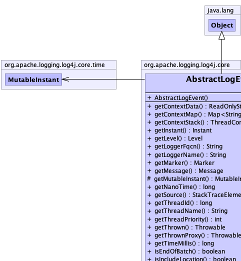
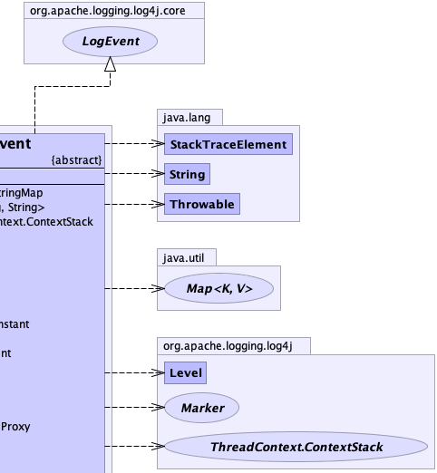
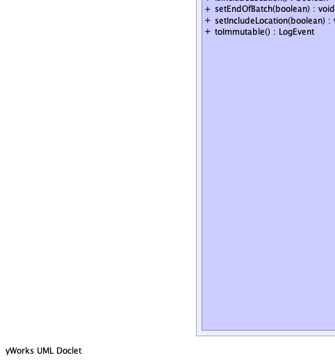
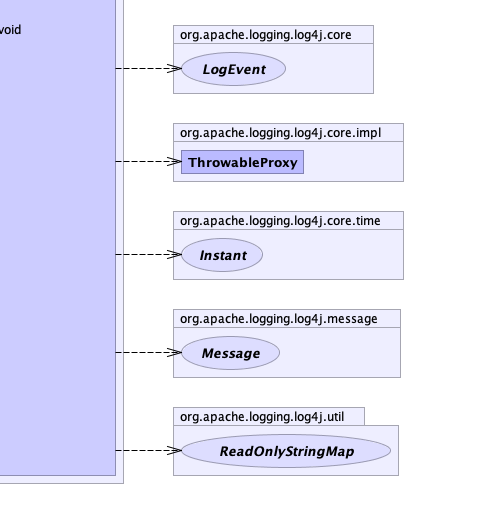

public abstract class AbstractLogEvent extends java.lang.Object implements LogEvent
|  |  |
|  |  |
| Constructor and Description |
|---|
AbstractLogEvent() |
| Modifier and Type | Method and Description |
|---|---|
ReadOnlyStringMap |
getContextData()
Returns the
ReadOnlyStringMap object holding context data key-value pairs. |
java.util.Map<java.lang.String,java.lang.String> |
getContextMap()
Returns
Collections.emptyMap(). |
ThreadContext.ContextStack |
getContextStack()
Gets the context stack (also known as Nested Diagnostic Context or NDC).
|
org.apache.logging.log4j.core.time.Instant |
getInstant()
Returns the Instant when the message was logged.
|
Level |
getLevel()
Gets the level.
|
java.lang.String |
getLoggerFqcn()
Returns the fully qualified class name of the caller of the logging API.
|
java.lang.String |
getLoggerName()
Gets the logger name.
|
Marker |
getMarker()
Gets the Marker associated with the event.
|
Message |
getMessage()
Gets the message associated with the event.
|
protected org.apache.logging.log4j.core.time.MutableInstant |
getMutableInstant() |
long |
getNanoTime()
Returns the value of the running Java Virtual Machine's high-resolution time source when this event was created,
or a dummy value if it is known that this value will not be used downstream.
|
java.lang.StackTraceElement |
getSource()
Gets the source of logging request.
|
long |
getThreadId()
Gets the thread ID.
|
java.lang.String |
getThreadName()
Gets the thread name.
|
int |
getThreadPriority()
Gets the thread priority.
|
java.lang.Throwable |
getThrown()
Gets throwable associated with logging request.
|
org.apache.logging.log4j.core.impl.ThrowableProxy |
getThrownProxy()
Gets throwable proxy associated with logging request.
|
long |
getTimeMillis()
Gets event time in milliseconds since midnight, January 1, 1970 UTC.
|
boolean |
isEndOfBatch()
Returns
true if this event is the last one in a batch, false otherwise. |
boolean |
isIncludeLocation()
Returns whether the source of the logging request is required downstream.
|
void |
setEndOfBatch(boolean endOfBatch)
Sets whether this event is the last one in a batch.
|
void |
setIncludeLocation(boolean locationRequired)
Sets whether the source of the logging request is required downstream.
|
LogEvent |
toImmutable()
Subclasses should implement this method to provide an immutable version.
|
public LogEvent toImmutable()
toImmutable in interface LogEventpublic ReadOnlyStringMap getContextData()
LogEventReadOnlyStringMap object holding context data key-value pairs.
Context data (also known as Mapped Diagnostic Context or MDC) is data that is set by the application to be
included in all subsequent log events. The default source for context data is the ThreadContext (and
properties
configured on the Logger that logged the event), but users can configure a custom ContextDataInjector
to inject key-value pairs from any arbitrary source.
getContextData in interface LogEventReadOnlyStringMap object holding context data key-value pairsContextDataInjector,
ThreadContextpublic java.util.Map<java.lang.String,java.lang.String> getContextMap()
Collections.emptyMap().getContextMap in interface LogEventnull.public ThreadContext.ContextStack getContextStack()
LogEventgetContextStack in interface LogEventnull.public java.lang.String getLoggerFqcn()
LogEventgetLoggerFqcn in interface LogEventpublic java.lang.String getLoggerName()
LogEventgetLoggerName in interface LogEventnull.public Marker getMarker()
LogEventpublic Message getMessage()
LogEventgetMessage in interface LogEventpublic java.lang.StackTraceElement getSource()
LogEventpublic long getThreadId()
LogEventgetThreadId in interface LogEventpublic java.lang.String getThreadName()
LogEventgetThreadName in interface LogEventpublic int getThreadPriority()
LogEventgetThreadPriority in interface LogEventpublic java.lang.Throwable getThrown()
LogEventConvenience method for ThrowableProxy.getThrowable();
public org.apache.logging.log4j.core.impl.ThrowableProxy getThrownProxy()
LogEventgetThrownProxy in interface LogEventpublic long getTimeMillis()
LogEventLogEvent.getInstant() to get higher precision timestamp information if available on this platform.getTimeMillis in interface LogEventSystem.currentTimeMillis()public org.apache.logging.log4j.core.time.Instant getInstant()
LogEvent
Caution: if this LogEvent implementation is mutable and reused for multiple consecutive log messages,
then the Instant object returned by this method is also mutable and reused.
Client code should not keep a reference to the returned object but make a copy instead.
getInstant in interface LogEventInstant holding Instant details for this log eventprotected final org.apache.logging.log4j.core.time.MutableInstant getMutableInstant()
public boolean isEndOfBatch()
LogEventtrue if this event is the last one in a batch, false otherwise. Used by asynchronous
Loggers and Appenders to signal to buffered downstream components when to flush to disk, as a more efficient
alternative to the immediateFlush=true configuration.isEndOfBatch in interface LogEventpublic boolean isIncludeLocation()
LogEventStackTrace snapshot or not before handing off this event to
another thread.isIncludeLocation in interface LogEventtrue if the source of the logging request is required downstream, false otherwise.LogEvent.getSource()public void setEndOfBatch(boolean endOfBatch)
LogEventimmediateFlush=true configuration.setEndOfBatch in interface LogEventendOfBatch - true if this event is the last one in a batch, false otherwise.public void setIncludeLocation(boolean locationRequired)
LogEventStackTrace snapshot or not before handing off this event to
another thread.setIncludeLocation in interface LogEventlocationRequired - true if the source of the logging request is required downstream, false
otherwise.LogEvent.getSource()public long getNanoTime()
LogEventgetNanoTime in interface LogEvent